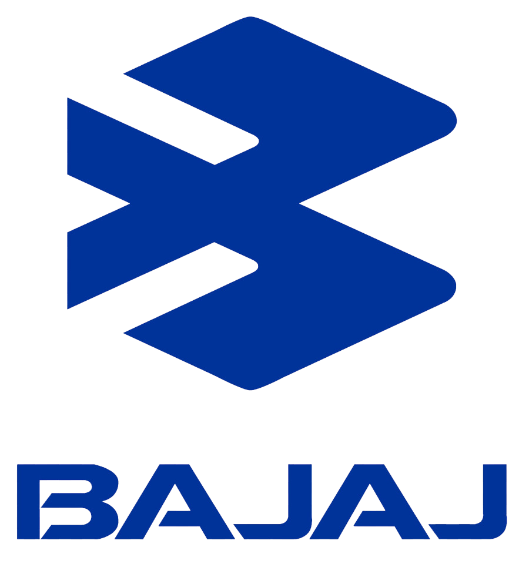

Pulsar 400 RS

Bajaj Pulsar RS200 is quite a popular fully-faired motorcycle in India. Bajaj is currently trying to expand its portfolio for the Indonesian market. However, the Indonesian market has more scope for the mid displacement engines. As per the reports, to fill the need, Bajaj will be developing the bigger Pulsar RS200, the Bajaj Pulsar RS400.

As per the reports, this elder sibling of the RS200 will have multiple changes. Starting from the engine to the ergonomics and features. The Pulsar RS400 will be marketed as a sports tourer, so it will have a slightly relaxed posture than RS200. The rider seat height will be also lowered so that it can be approached for a wider audience. Along with the ergonomics, it will also have slightly different panels and colour schemes.The Bajaj Pulsar RS200 lacks modern features such as fully-digital instrument cluster, side stand engine inhibitor, etc. So we can expect the RS400 to get the instrument cluster from the Dominar 400. The instrument cluster unit on Domunar 400 is a negative display unit which can well suit the Pulsar RS400 as well. Nevertheless, it is also expected to come with a different taillamp unit.
Talking about the hardware, the suspension setup is expected to be borrowed from the Dominar 400. The Dominar 400 comes with 43 mm USD forks at the front and adjustable monoshock at the rear. The braking might be done with the 320 mm disc at the front and 230 mm disc at the rear. These brakes will be assisted by the dual-channel ABS which we can expect to be switchable. The tyres are expected to be better than the RS200 for sure. It should be getting 150-section rear tyre as opposed to 130-section tyre of the RS200.
The Bajaj RS400 most probably will borrow the engine from the Dominar 400. The Bajaj Dominar 400 comes with a 373 cc single-cylinder, fuel-injected, liquid-cooled motor. It produces about 38.8 bhp max power and 35 Nm of peak torque. The engine comes mated with a six-speed gearbox and slipper clutch. However, the engine on the Pulsar RS400 might get tweaked to suit its purpose.
Its still on the surface to say anything about the launch in India. It is more likely to get first launched in Indonesia. Talking about the price, the Bajaj Pulsar RS400 should cost around Rs 2-2.1 lakhs (ex-showroom) in India. It might also get a different name, more likely to get the name as SS400. It will be competing against KTM RC 390, TVS Apache RR310 and Kawasaki Ninja 300.